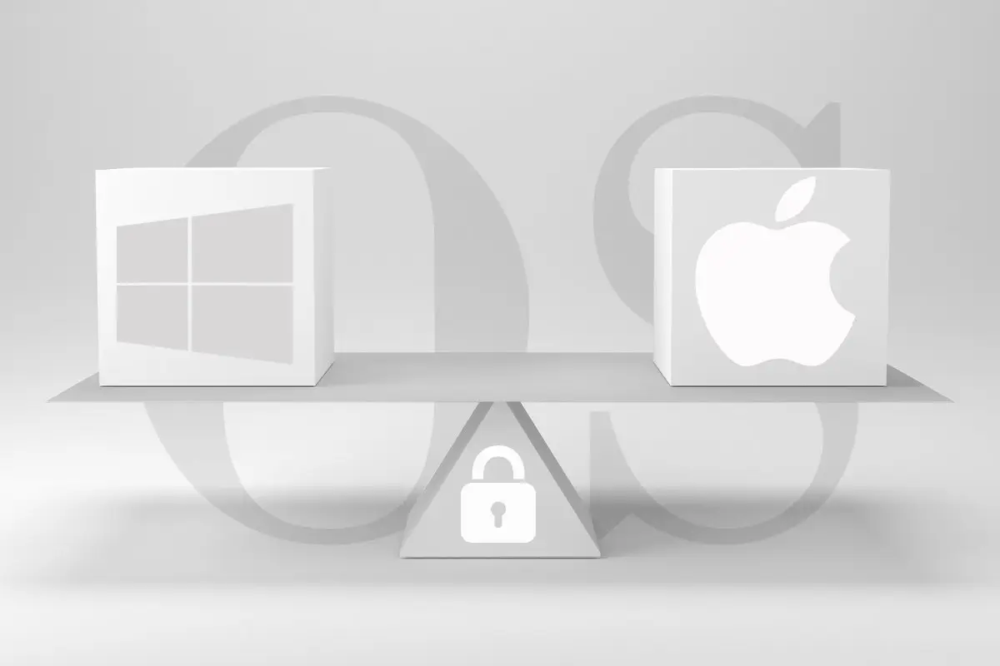
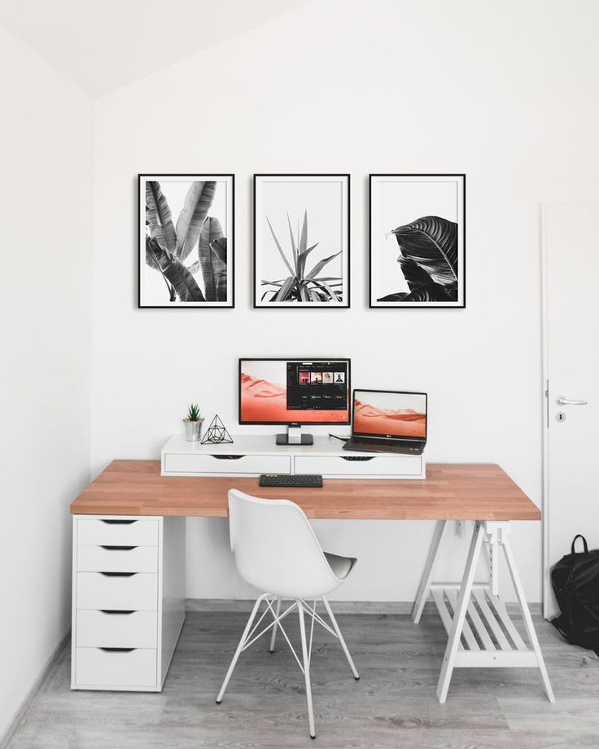
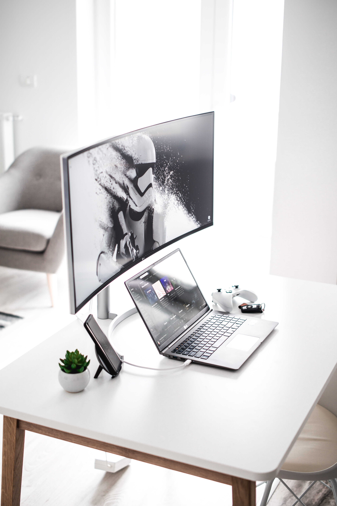

When it comes to computer programming, your comfort and health comes first. Never put a price tag on it.
If you spend long hours on the computer I would strongly advice to invest in a proper keyboard to prevent
any health problems later on in life.

Mac Vs Windows
Every body has their preference when it comes to OPERATING SYSTEM. Some has no option but to buy
a OPERATING SYSTEM that gears toward there path in computer programming. It all come down to..
Gadgets for programming
You seat on your computer desk all day or most of the day creating the future. Here are some must have
Gadgets for your desk to play around with when you need just a little distraction to release some tension.

Programmer Desk Setup
Desk setup is becoming the new thing for Programmers developers or anyone who spend a vast amount of time
on the computer. So, i gather some popular desk setups which will inspire you to create a space
that can be comfy and cozy which can also aid in your work productivity.

Best Monitor
AS a developer, we all know the Importance of a great monitor. buying a proper monitor not only increase your work flow but it can
also helps with your eye sight as we age. Here are my top 5 pick for best monitors for Programmer.